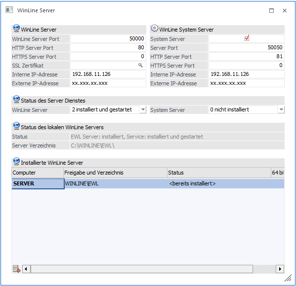
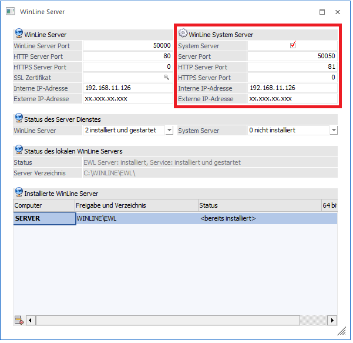
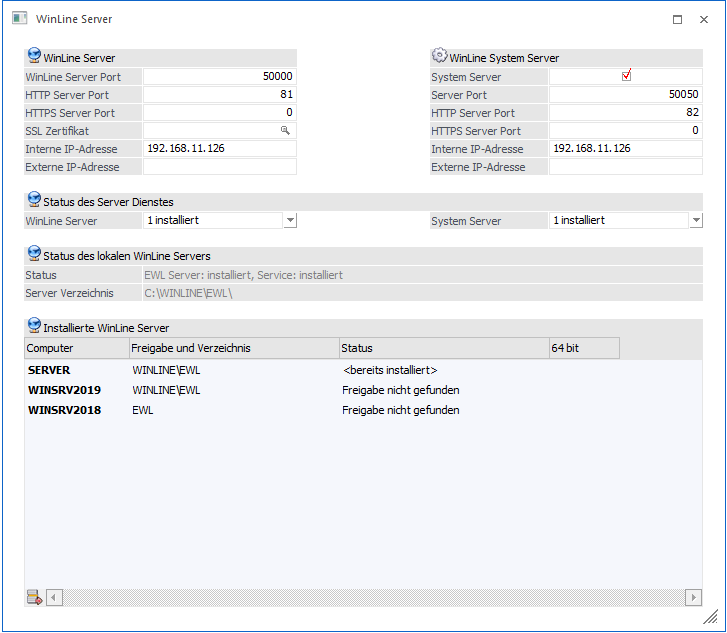

Im Menüpunkt
1 MSM
1 WinLine Server
können Einstellungen zum WinLine Server (auch nachträglich) vorgenommen werden. Die hier getroffenen Einstellungen finden sich auch in der Datei "server.config" (die sich im EWL-Verzeichnis befindet) wieder.

Das Einstellungsfenster ist in fünf Bereiche aufgeteilt:
ü WinLine Server
ü WinLine System Server
ü Status des Server Dienstes
ü Status des lokalen WinLine Servers
ü Installierte WinLine Server
WinLine Server
In diesem Bereich können die WinLine Server Einstellungen, die bei der Einrichtung des Servers gemacht wurden, nachträglich geändert werden. Sollte der WinLine -Server neu eingerichtet werden (z.B. im Zuge einer Verwendung des WinLine System Servers), müssen hier die entsprechenden Einträge gemacht werden.
Ø WinLine Server Port
Der WinLine Server Port wird programmtechnisch vom Java-Client (Java Applet) verwendet, um auf den WinLine Server zugreifen zu können.
Ø HTTP Server Port
Dieser Port wird dazu verwendet, die WinLine über einen Browser (z.B.: Internet-Explorer) anzusurfen. Der WinLine Server wird über den HTTP Server Port angesurft um eine nicht vorhandene bzw. eine neuere/aktuelle Java-Client-Version herunterladen zu können bzw. das Login zu verifizieren. Ab diesem Zeitpunkt kommuniziert der Java-Client über ein WinLine-internes Protokoll mit dem WinLine Server (über den eingegebenen WinLine Server Port).
Ø HTTPS Server Port
Dieser Port wird dazu verwendet, die WinLine über einen Browser (z.B.: Internet-Explorer) sicher anzusurfen. Der WinLine Server wird anschließend über den HTTPS Server Port (Standardport 443) angesurft. Ab diesem Zeitpunkt kommuniziert der Java-Client über ein WinLine-internes Protokoll mit dem WinLine -Server (über den eingegebenen WinLine Server Port).
Ø SSL Zertifikat
In diesem Feld kann mittels Matchcode das abgespeicherte SSL Zertifikat ausgewählt werden. Durch die Auswahl wird das Zertifikat auf "Keystore.pem" umbenannt und in das EWL-Verzeichnis "EWL/Certs" kopiert und übernommen.
Ist die die Datei erstmal hinterlegt und vorhanden, kann diese nachträglich nur noch geändert werden, wenn die Datei "keystore.pem" gelöscht oder mit dem neuen Zeritifkat überschrieben wird.
Hinweis
Nach erfolgreicher Zertifikatsübernahme bitte den WinLine Server neu starten damit die Änderungen wirksam werden.
Ø Status Serverdienst
Hier kann der aktuelle Installationsstatus vom WinLine Server Dienst (Mesonic WinLine Service Manager) verändert werden.
ü 0 nicht installiert
ü 1 installiert
ü 2 installiert und gestartet
Der Serverdienst kann nachträglich entweder deinstalliert, installiert oder gestartet werden. Eine manuelle Installation/Deinstallation ist ebenfalls über mesosvcmanager.exe -i bzw. mesosvcmanager.exe -d möglich. Weitere Möglichkeiten hierzu können mittels Parameter mesosvcmanager.exe -? angezeigt werden.
Status des lokalen WinLine Servers
In diesem Bereich wird der Status des Servers, des WinLine Service Dienstes, sowie das WinLine Server Verzeichnis angezeigt.

WinLine System Server
Über den so genannten WinLine System Server besteht die Möglichkeit, mehrere WinLine -Server installiert zu haben und man abhängig von der Anzahl der gestarteten Clients automatisch zu einem "weiteren" WinLine Server verbunden wird. Der WinLine System Server wählt dabei, je nach Anzahl der bereits angemeldeten Benutzer, einen der angemeldeten EWL-Server aus und leitet die HTTP-Anfrage des WinLine -Cients auf diesen EWL-Server um.
Ein WinLine System Server kann z.B. in Form einer Serverfarm verwendet werden.
Ø System Server
Um einen " WinLine System Server" einzurichten muss diese Option aktiviert werden.
Ø Server Port
Der WinLine Server Port wird programmtechnisch vom Java-Client (Java Applet) verwendet, um auf den WinLine Server zugreifen zu können.
Ø HTTP Server Port
Dieser Port wird dazu verwendet, die WinLine über einen Browser (z.B.: Internet-Explorer) anzusurfen. Der WinLine Server wird über den HTTP Server Port angesurft um eine nicht vorhandene bzw. eine neuere/aktuelle Java-Client-Version herunterladen zu können bzw. das Login zu verifizieren. Ab diesem Zeitpunkt kommuniziert der Java-Client über ein WinLine-internes Protokoll mit dem WinLine-Server (über den eingegebenen WinLine Server Port).
Ø HTTPS Server Port
Dieser Port wird dazu verwendet, die WinLine über einen Browser (z.B.: Internet-Explorer) sicher anzusurfen. Der WinLine Server wird anschließend über den HTTPS Server Port (Standardport 443) angesurft. Ab diesem Zeitpunkt kommuniziert der Java-Client über ein WinLine-internes Protokoll mit dem WinLine -Server (über den eingegebenen WinLine Server Port).
Achtung
Die anzugebenden Ports müssen unterschiedlich zum WinLine-Server sein, falls ein solcher auf dem gleichen Rechner wie der WinLine-System Server läuft.
Handelt es sich beim WinLine-Client um einen WinLine Server der NICHT gleich dem WinLine-System Server ist, dann müssen diese Ports dahingehend eingerichtet werden, dass sie dem WinLine-System Server entsprechen.
Ø Status Serverdienst
Hier kann der aktuelle Installationsstatus vom WinLine Server Dienst (Mesonic WinLine System Server Service Manager) verändert werden.
ü 0 nicht installiert
ü 1 installiert
ü 2 installiert und gestartet
Serverdienst starten/beenden
Um den Serverdienst zu starten bzw. zu stoppen kann der "Mesonic Service Manager" verwendet werden. Dieser kann im EWL Verzeichnis durch Ausführen der Datei "mesosvcwnd.exe" mit dem zusätzlichen Parameter "--systemserver" gestartet werden. Dadurch wird das " Mesonic System Server Service Manager"-Symbol im Tray angezeigt.
Ø Installierte WinLine Server
In dieser Tabelle können weitere WinLine Server (Anzahl ist lizenzabhängig) definiert werden.
Ausgehend von der bereits vorhandenen WinLine-Installation können weitere Rechner mit der EWL-Installation "versorgt" werden:

Ø Computer
In diesem Feld muss der Name der Workstation eingegeben werden, auf die die WinLine-Dateien kopiert werden sollen. Durch Drücken der F9-Taste kann nach allen Workstations (und Freigaben), die aktiv im Netzwerk sind, gesucht werden.
Ø Freigabe und Verzeichnisse
Hier muss die Freigabe und das Verzeichnis angegeben werden in die die WinLine-Dateien kopiert werden sollen. Durch Drücken der F9-Taste kann nach allen Freigaben gesucht werden.
Hinweis:
Nachdem es für WinLine-Server notwendig ist, diese als WinLine-Clients einzurichten, sollten die entsprechenden Freigaben bereits vorhanden sein!
Ø Status
In diesem Feld wird der Status der aktuellen Zeile angezeigt. Z.B. dass der WinLine-Server bereits installiert ist, oder die Freigabe nicht gefunden wurde, oder dass es sich um einen neuen Eintrag handelt.